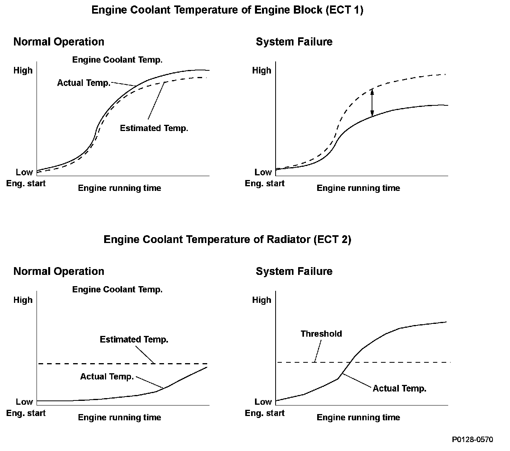
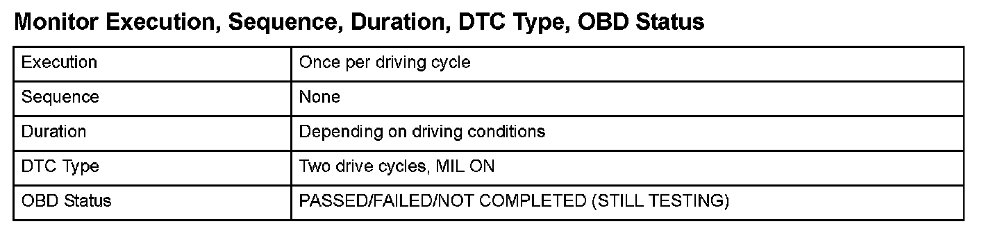
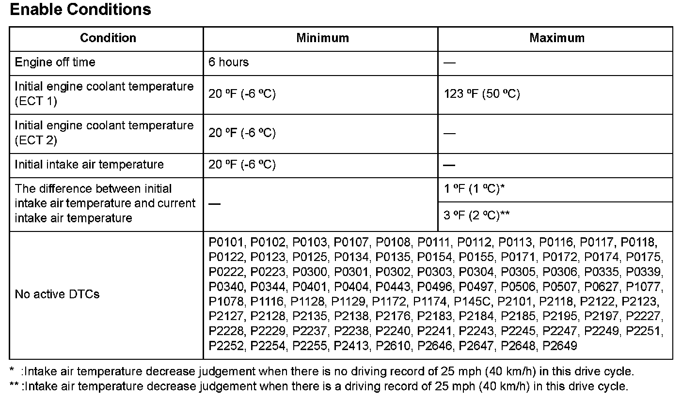

Advanced Diagnostics
DTC P0128: Cooling System Malfunction
General Description
The thermostat is closed when the engine coolant temperature is low, and it stops the circulation of engine coolant to speed engine warm up. When the engine coolant temperature increases, the thermostat opens and circulates engine coolant to control its temperature. When the engine coolant temperature decreases, the opening area of the thermostat is reduced to regulate the engine coolant temperature. If the thermostat sticks open, engine warm up is delayed, and exhaust emissions are adversely affected. The powertrain control module (PCM) measures the rise in the coolant temperature after the engine starts using engine coolant temperature (ECT) sensors 1/2, and it estimates the characteristics of the engine coolant temperature by calculations based on those two temperatures and the driving conditions. When ECT 2 immediately increases from the starting value, it is defined as the thermostat stuck open. When ECT 2 does not increase to the specified value, it is defined as a thermostat malfunction.

Monitor Execution, Sequence, Duration, DTC Type, OBD Status

Enable Conditions
Malfunction Threshold
Malfunction determination 1:
If the difference between the current measured coolant temperature at the radiator (ECT 2) and the initial coolant temperature at the radiator (ECT 2) is at least 21 °F (12 °C) when the calculated coolant temperature at the engine (ECT 1) reaches 159 °F (71 °C), a malfunction is detected (thermostat stuck open); or if the coolant temperature at the radiator (ECT 2) only reaches 68 °F (20 °C), a malfunction is detected (thermostat malfunction).
Malfunction determination 2:
When the calculated engine coolant temperature (ECT 1) reaches 158 °F (70 °C) before the measured engine coolant temperature (ECT 1) reaches 158 °F (70 °C), a malfunction is detected.
Driving Pattern
1. Start the engine under the conditions specified under Enable Conditions.
2. Drive the vehicle at a speed between 15 - 75 mph (24 - 120 km/h) for at least 10 minutes.
- Drive the vehicle in this manner only if the traffic regulations and ambient conditions allow.
Diagnosis Details
Conditions for illuminating the MIL
When a malfunction is detected during the first drive cycle with the ECT and IAT at engine start-up within the specified temperature range, a Temporary DTC is stored in the PCM memory. If the malfunction recurs during the next (second) drive cycle with the ECT and IAT at engine start-up within the specified temperature range, the MIL comes on and the DTC and the freeze frame data are stored.
Conditions for clearing the MIL
The MIL will be cleared if the malfunction does not recur during three consecutive trips in which the diagnostic runs.
The MIL, the DTC, the Temporary DTC, and the freeze frame data can be cleared by using the scan tool Clear command or by disconnecting the battery.